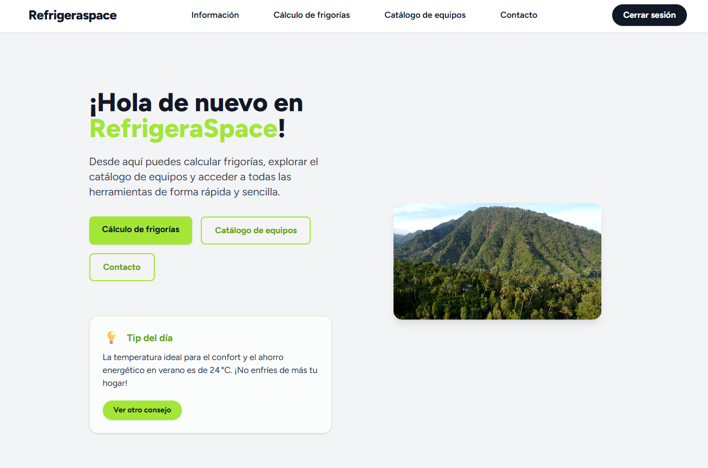

Ex-técnico de mantenimiento y frigorista reconvertido en desarrollador web full-stack. Combino la disciplina en diagnóstico y resolución de averías críticas con dominio de Java, Spring Boot, JavaScript, PHP, Laravel 12 y Tailwind para entregar aplicaciones robustas, seguras y orientadas a la experiencia de usuario. Perfil híbrido ideal para entornos que exigen fiabilidad operativa y agilidad en producto digital.
Ex-técnico de mantenimiento y frigorista reconvertido en desarrollador web full-stack. Combino la disciplina en diagnóstico y resolución de averías críticas con dominio de Java, Spring Boot, JavaScript, PHP, Laravel 12 y Tailwind para entregar aplicaciones robustas, seguras y orientadas a la experiencia de usuario. Perfil híbrido ideal para entornos que exigen fiabilidad operativa y agilidad en producto digital.
Experiencia
Prácticas Grado Superior DAWCesur Sevilla · 2023-2025
Desarrollo de aplicaciones web con tecnologías como Java, PHP, JavaScript, Spring Boot, Laravel, Tailwind CSS y Breeze. Participación en proyectos reales, trabajando tanto en frontend como en backend, y adquiriendo experiencia en el desarrollo de soluciones modernas y escalables.
Educación
Grado Superior DAWCesur Sevilla · 2023-2025
Desarrollo de aplicaciones web con Java, PHP, JavaScript, Spring Boot, Laravel, Tailwind CSS, Breeze.
Grado Medio en Técnico de RefrigeraciónIES Virgen de los Reyes · 2022
Formación profesional en sistemas de refrigeración, climatización y mantenimiento industrial. Adquisición de competencias técnicas y experiencia práctica en el sector.
Proyectos Destacados

RefrigeraSpace
Aplicación web en Laravel 12 para cálculo de frigorías y selección de equipos de aire acondicionado. Incluye scraping automático, generación de PDF y panel de administración.